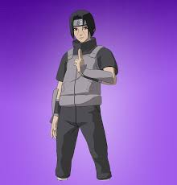
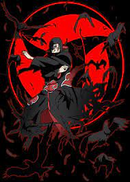

Mangekyō Sharingan

Itachi awakened the Mangekyō Sharingan after witnessing Shisui's suicide. Its design was three spiralling curves around the pupil. With his right eye he could use Amaterasu, igniting whatever he looked at with black flames that would burn anything, including fire itself, and at will extinguish Amaterasu
Intelligence
Itachi was a highly intelligent individual. He was considered the greatest genius in the history of the Academy having perfect grades from the day he started school until his graduation. He graduated the Academy in just 4 months after joining at the age of 6 years.
